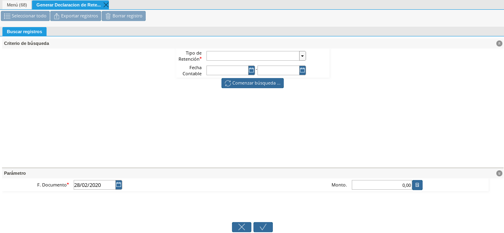
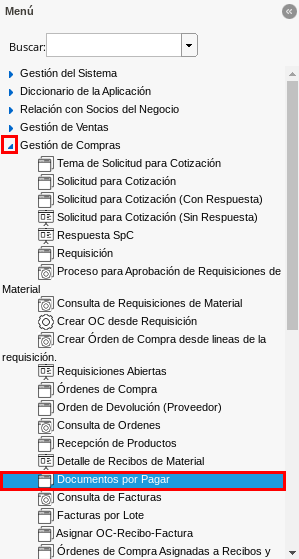

3.4.4.1. Generar Declaraciones de Retenciones¶
Ubique y seleccione en el menú de ADempiere, la carpeta “Manejo de Retenciones”, luego seleccione la ventana “Generar Declaración de Retenciones”.

Imagen 1. Menú de ADempiere
Podrá visualizar la ventana de búsqueda inteligente “Generar Declaración de Retenciones”, con los campos “Tipo de Retención” en el cual se selecciona el tipo de retención a declarar y “Fecha Contable” con el cual se establece el rango de fecha para filtrar la búsqueda.

Imagen 2. Ventana de Búsqueda Inteligente Generar Declaración de Retenciones
Seleccione en el campo “Tipo de Retención”, el tipo de retención por la cual desea filtrar la búsqueda para realizar la declaración del mismo. Para ejemplificar el registro es utilizada la opción “I.V.A_Retención de I.V.A.”.

Imagen 3. Campo Tipo de Retención
Note
Recuerde que en el campo “Tipo de Retención”, puede seleccionar cualquiera de las opciones “IM_Retencion de Impuesto Municipal”, “ISLR_Retención de I.S.L.R.” o “I.V.A_Retención de I.V.A.”, para realizar la búsqueda de las retenciones aplicadas de acuerdo a la opción seleccionada.
Seleccione en el campo “Fecha Contable”, el rango de fecha para filtrar la búsqueda de las retenciones aplicadas, según el tipo de retención seleccionado.

Imagen 4. Campo Fecha Contable
Seleccione la opción “Comenzar Búsqueda”, para búscar los registros que tengan coincidencias con la información ingresada en los campos o filtros de búsqueda.

Imagen 5. Opción Comenzar Búsqueda
Note
El campo “F. Documento” es la fecha contable que tomará el documento de declaración de retenciones al culminar el proceso “Generar Declaración de Retenciones”. ERPyA recomienda ingresar la fecha en la que se declara la retención.
Seleccione las diferentes retenciones a declarar y posteriormente seleccione la opción “OK” para culminar el proceso “Generar Declaración de Retenciones”.

Imagen 6. Selección de Retenciones y Opción OK
Note
En la ventana del proceso se muestran todas las retenciones aplicadas a los diferentes socios del negocio que tengan coincidencias con la información ingresada en los campos o filtros de búsqueda.
Podrá visualizar en la parte inferior izquierda de la ventana, el número del documento generado.

Imagen 7. Número de Declaración Generada
Note
El proceso genera un documento por pagar de tipo “Declaración Municipal de Cuentas por Pagar”, “Declaración de ISLR de Cuentas por Pagar” o “Declaración de IVA de Cuentas por Pagar”, según la opción seleccionada en el campo “Tipo de Retención”. El mismo es generado en estado “Completo” y con la sumatoria del monto total de todas las retenciones seleccionadas.
3.4.4.2. Consultar Declaración de Retenciones¶
Ubique y seleccione en el menú de ADempiere, la carpeta “Gestión de Compras”, luego seleccione la ventana “Documento por Pagar”.

Imagen 8. Menú de ADempiere
Al buscar el documento de declaración de retenciones, con el número de documento generado en la ventana del proceso “Generar Declaración de Retenciones”, podrá visualizar el mismo de la siguiente manera.

Imagen 9. Documento por pagar generado de tipo “Declaración de IVA de Cuentas por Pagar”
3.4.4.3. Detalle de Declaraciones de Retenciones¶
Ubique y seleccione en el menú de ADempiere, la carpeta “Localización Venezuela”, luego seleccione la ventana “Detalle de Retenciones”.

Imagen 10. Menú de ADempiere
Podrá visualizar la ventana del reporte “Detalle de Retenciones”, con diferentes campos o filtros para realizar la búsqueda de la información según lo requerido por el usuario y generar el reporte de acuerdo a lo seleccionado en los mismos.

Imagen 11. Ventana del Reporte Detalle de Retenciones
Seleccione en el campo “Fecha Contable”, el rango de fecha para filtrar la búsqueda de las declaraciones realizadas.

Imagen 12. Campo Fecha Contable
Seleccione en el campo “Tipo de Retención”, el tipo de retención por la cual desea filtrar la búsqueda de las declaraciones realizadas. Para ejemplificar el registro es utilizada la opción “I.V.A_Retención de I.V.A.”.

Imagen 13. Campo Tipo de Retención
Note
Recuerde que en el campo “Tipo de Retención”, puede seleccionar cualquiera de las opciones “IM_Retencion de Impuesto Municipal”, “ISLR_Retención de I.S.L.R.” o “I.V.A_Retención de I.V.A.”, para realizar la búsqueda de las declaraciones generadas de acuerdo a la opción seleccionada.
Seleccione la opción “OK” para generar el reporte “Detalle de Retenciones”
Imagen 14. Opción OK
Podrá visualizar el reporte con todas las retenciones aplicadas a los diferentes socios del negocio que tengan coincidencias con la información ingresada en los campos o filtros de búsqueda.

Imagen 15. Reporte de Detalle de Retenciones
Para visualizar el reporte de las diferentes declaraciones de retenciones generadas a los diferentes socios del negocio que tengan coincidencias con la información ingresada en los campos o filtros de búsqueda, seleccione en el campo o filtro “Formato de Impresión”, la opción “Declaración_TXT_IVA”.

Imagen 16. Reporte de Detalle de Declaraciones
Note
La opción en el campo “Formato de Impresión”, para visualizar el reporte de las declaraciones de ISLR es “RelaciónRetencionesISLR”.
Seleccione el icono “Exportar Registros”, para exportar el archivo o documento que debe ser importado a al portal del SENIAT.

Imagen 17. Icono Exportar Registros
Podrá visualizar la siguiente ventana donde debe seleccionar en el campo “Archivo de Tipo”, la opción “Declaración de I.V.A (txt) Archivo de exportación de Declaración de I.V.A” y posteriormente la opción “OK” para generar el archivo o documento de declaración de retenciones de IVA.

Imagen 18. Campo Archivo de Tipo y Opción OK
Note
La opción para generar el archivo o documento de declaración de retenciones de ISLR es “Declaración de I.S.L.R (xml) Export file format for Withholding Rental Tax applied to documents”.
Podrá visualizar el archivo exportado en la parte inferior izquierda de la ventana del reporte “Detalle de Retenciones”.

Imagen 18. Archivo o Documento Exportado
Note
La declaración de las retenciones municipales de cuentas por pagar, varia según el municipio donde se encuentre el socio del negocio al cual se le brinda el servicio ya que en cada municipio varía la retención del mismo. En ADempiere, dicha declaración es generada realizando los procesos Generar Declaraciones de Retenciones y Consultar Declaración de Retenciones, anteriormente explicados en el presente material.